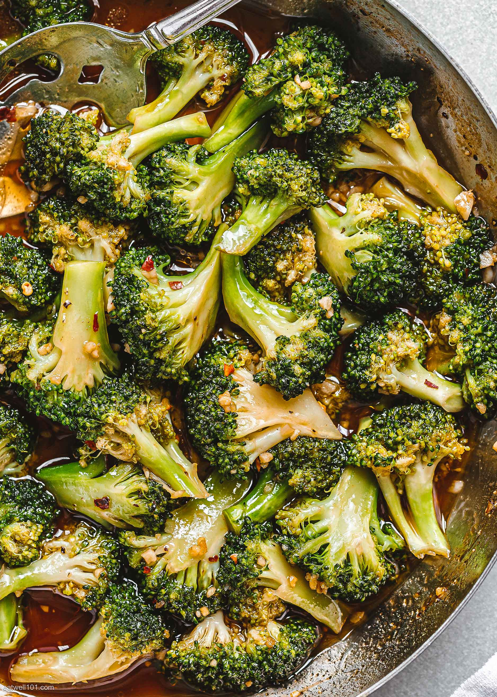

Broccoli Stir-Fry

Description
This dish has been a staple of my diet for years. It has everything you could ask for in a meal,
powerful flavors, plenty of spice, a cheap cost to make, and myriad health benefits from all
the cruciferous greens. Please enjoy my spin on it... Hopefully you like it hot!
Ingredients
- Broccoli crowns and stems, a few cups
- Cooking oil of choice, a couple teaspoons
- Garlic, 4-6 cloves
- Onion, 1/2 chopped
- Jalapeno or Serrano Peppers, 1/2 cup
- Cholula hot sauce, to taste
- Extra Firm Tofu, 400 grams diced
- Paprika, 2 teaspoons
- White or Brown Rice
- Low Sodium Soy Sauce, to taste
Instructions
- Cut the broccoli into bite-sized pieces, and dice the onion, garlic, and pepper.
- Heat your choice of oil in a nonstick pan on medium heat.
- Toss the garlic and onion into the hot pan, and stir until onions turn translucent.
- Place the broccoli and peppers into the pan, along with a splash of water to steam.
- Cover the pan and cook for roughly three minutes undisturbed.
- Remove the lid, then pour in a few good dashes of soy sauce, along with your paprika.
- Add the diced tofu into the pan as well. Allow to rest until tofu is cooked.
- Serve on top of fluffy rice with a healthy amount of Cholula, and enjoy!
Back to Recipes